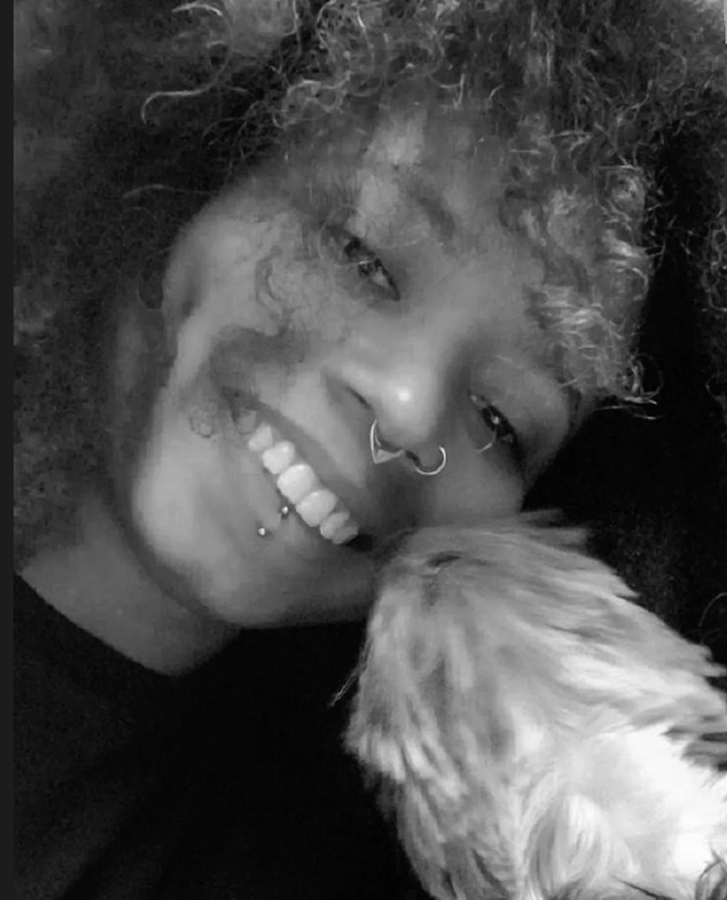

Rafaela Senceite

Sobre
Bacharela em Comunicação Visual Design pela UFRJ, com sete anos de trabalho em identidade visual, design editorial e comunicação institucional. Passei por projetos de marca para clientes e por campanhas da Fundação Roberto Marinho, onde desdobrei identidade em peças institucionais para Aprendiz Legal, Futura, Telecurso e co.liga.
Atendo como freelancer desde 2019. Trabalho com grid, tipografia e sistemas que precisam funcionar em formatos diferentes, e preparo arquivo para impressão e fechamento gráfico.
Photoshop, Illustrator, InDesign, Premiere e Dreamweaver, Figma, Canva, Trello, Miro e o pacote Office.
Currículo